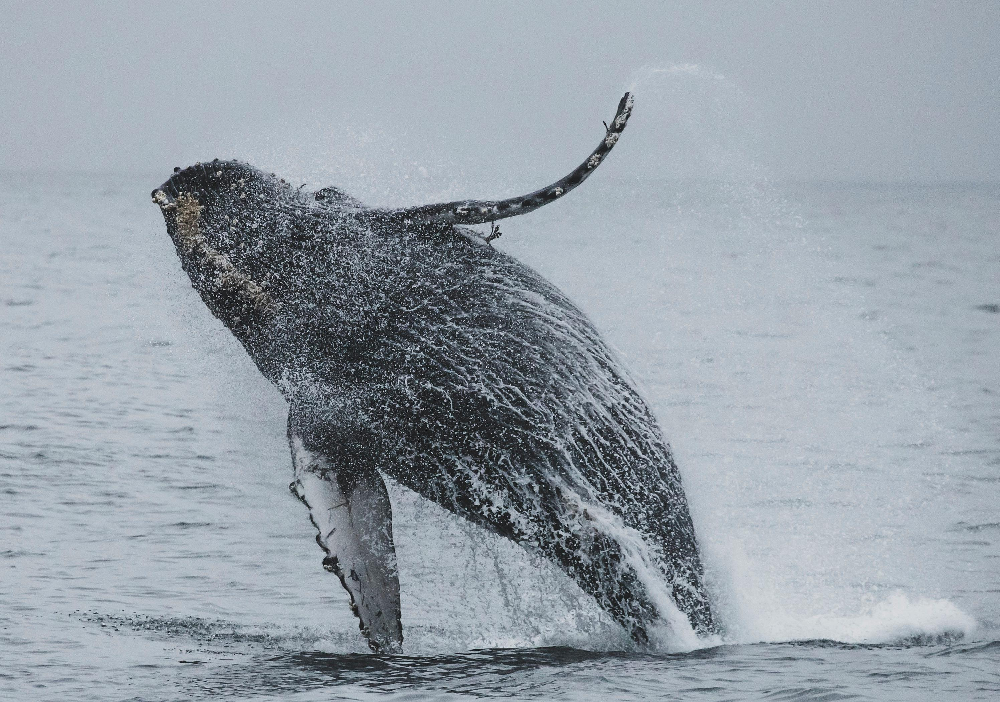

Discover

Whale
As large marine mammals, undertake extensive migrations and display complex communication through vocalizations, while also exhibiting behaviors like breaching.

Elephant
The largest land mammals, showcase intelligence and social structures within family groups led by a matriarch, utilizing their trunks for tasks like feeding and communication.

Hippopotamus
Despite their large size, are agile and territorial animals, often displaying aggressiveness, especially in defending their water habitats.

Polar Bear
Adapted to cold environments, polar bears excel in swimming and primarily feed on seals. They lead solitary lives, except during mating or when a female is accompanied by cubs.

Zebra
Recognized for their black and white striped coats, are social herbivores that form groups for protection and utilize their stripes as a form of camouflage.

Tiger
Large carnivorous cats, exhibit solitary hunting behaviors, primarily during the night, and are known for their strength, agility, and powerful roars.